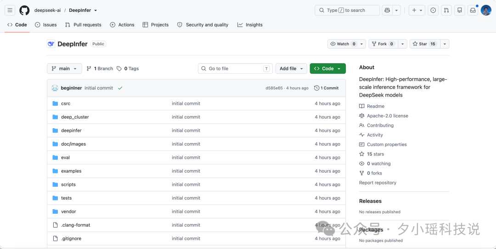
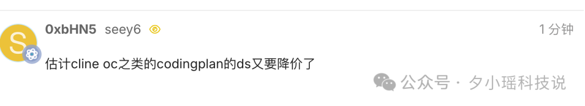
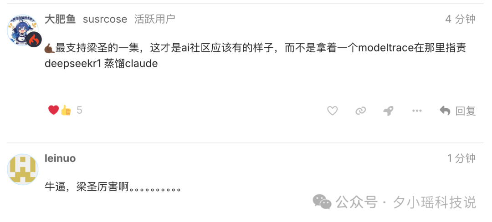

刚刚，DeepSeek又掀桌了！开源推理引擎
来源：微信公众号 归档日期：2026-10-20 抓取状态：成功 原文字符：2482｜配图：7 张
摘要速览
- 刚刚，DeepSeek开源推理框架，再次震撼AI圈。 DeepSeek官方博客用这句话开场，宣布全面开源内部推理框架DeepInfer，同步开源生产级Token编解码组件deepseek-recipe。 消息一出，技术社区就已经炸锅了。 不少开发者直呼，真的有被DeepSeek的开放精神深深震撼。。
核心内容
（待补充）
可执行启发
（待补充）
我的想法
（待补充）
原文沉淀
来源：https://mp.weixin.qq.com/s/_92qxY50yrITYDkhnKVv5w 平台：weixin｜作者：夕小瑶科技说 抓取方式：cdp｜字符数：3732｜图片：8
刚刚，DeepSeek开源推理框架，再次震撼AI圈。
「为善与众行之，为巧与众能之。」
DeepSeek官方博客用这句话开场，宣布全面开源内部推理框架DeepInfer，同步开源生产级Token编解码组件deepseek-recipe。

- DeepInfer： https://github.com/deepseek-ai/DeepInfer - deepseek-recipe： https://github.com/deepseek-ai/deepseek-recipe
消息一出，技术社区就已经炸锅了。
不少开发者直呼，真的有被DeepSeek的开放精神深深震撼。。

这可是模型的推理框架，属于提升模型推理效能的核心技术。
就这么，水灵灵的开源了。。
DeepSeek官方博客表示：
我们希望通过分享内部的部署经验，帮助开发者与企业组织优化大规模推理的吞吐与延迟，从而高效构建私有化及公有云部署，降低算力成本、减少能源消耗，让智能以更低的价格触达更广泛的人群，实现真正的大模型普惠。
啥是推理框架呢？
我们平时用 AI，最直观的感受往往是，出字速度，模型价格。
但在模型背后，当大量用户同时发来请求，服务器该先处理谁，计算任务怎么分配，多张芯片怎么配合？
这些事，很大程度上要靠推理框架来统筹。
如果把训练好的大模型比作一位名厨，那推理框架就是整间餐厅的后厨调度系统：当成千上万个用户同时点单，服务器该如何分工处理请求？
◈DeepInfer
DeepInfer这次公开的，正是其中一套已经用于DeepSeek自家服务的工程实现。
它集成了高性能算子和经过优化的推理引擎，支持分布式推理、推测解码、SWA Bounded Replay、结构化输出等能力，兼容英伟达与华为昇腾平台。
技术名字看着有点绕，但目标是统一的：
让计算更高效，让生成少一些等待。
［图：图片］
此前，DeepSeek已经陆陆续续放出过FlashMLA、DeepGEMM、DeepEP等一系列单点算子库。
这次公开的 DeepInfer，直接把这些零散库组装成了整套工程框架。
具体来看，这次开源的DeepInfer主要有几个核心：
- 核心算子与并行调度合一
把FlashMLA、DeepGEMM、DeepEP、TileKernels、DeepSelect及自定义TileLang算子打包进了统一的运行时里，内置注意力数据并行（Attention DP）、上下文并行（CP）和MoE专家并行（EP）及负载均衡。
- 给生成加速的巧劲
支持DSpark与基于置信度调度的推测解码（先快速猜几个候选词再批量验证，默认最多一次猜5个），同时用SWA Bounded Replay（滑动窗口有界重放）截断长上文冗余计算，减少预填充阶段的工作量。
- 确定性与结构化输出
支持与批次组合无关的一致性推理（Batch-invariant inference）和确定性采样，也能直接用正则表达式、JSON Schema或EBNF语法框住模型输出格式，省去开发者在业务层反复清洗格式崩溃的麻烦。
- 同时兼容英伟达与国产算力
官方仓库明确列出了双平台支持。适配英伟达SM100架构GPU，也原生支持华为昇腾950 NPU。
根据官方放出的DeepSeek-V4.1-Flash实测数据（基于单Scale-up域内的4张SM100跑Prefill、64张SM100跑Decode），在128K长上下文场景下：
Prefill吞吐最高可冲上约29K tokens/s/GPU；
Decode阶段在每用户每秒吐字80 tokens的交互速度下，单卡输出吞吐也能达到约2200 tokens/s/GPU。
◈deepseek-recipe
与此同时，DeepSeek 还公布了另一块配套组件：deepseek-recipe。
很多企业在本地或云上把开源模型跑起来之后，经常会遇到一个坑：明明用的是同一个模型权重，自己搭出来的效果却好像比官方API“笨”一点。
病根往往出在请求前后的格式转换上。
这次同步公开的deepseek-recipe，干的就是“同声传译”的活。
它能把OpenAI或Anthropic等不同格式的API请求转换成统一的会话表示，严格按照DeepSeek官方逻辑拼好提示词、编码成Token喂给模型，等模型算完再原样解析回对应的API响应格式。
用官方的话说，这能帮助社区在私有化部署时，拿到和官方API一致的体验。
目前，DeepSeek-V4.1-Flash的大规模推理服务已经跑在DeepInfer之上；官方也明确表态，未来DeepSeek新模型的推理代码和后续优化都会在这个仓库里持续更新。

从开源模型权重、开源底层算子，到今天把推理框架和API编解码逻辑一并交出。
「为巧与众能之。」
这一次，DeepSeek 把支撑自家服务的工程经验，交到了更多开发者手里。
归属：[[02-输入/按主题/工具与技术/_index|工具与技术]]